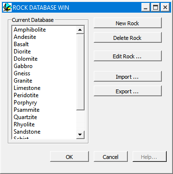

Editing the rock database
In order to build up a set of pre-defined rock properties, a rock property database can be built. Noddy comes with a default set of properties, which were copied from Telford et al, and which represent 'average' values of susceptibility and density for a number of different rock types. Since susceptibility values in particular show enourmous regional variations, it is more likely that you will create your own database entries.
In order to edit the default database, a file called 'PROPERTY.ROX', select Edit Rock Database from the Tools Menu. This file is a global file that will be loaded each time Noddy is started up, however history files written out from Noddy will not be updated if the database if modified.
Once a rock properties database has been defined, clicking in the menu tag of the name of the rock in the Rock Property definition winodow allows the user to choose from a predefined list of rock types, and all of the rock property values (except Height) will be automatically filled in.

Warning: if SI units are specified in the Project Options window, the values entered must be in SI units, as they will be converted to cgs units within the database.
| GROUP | NAME | FUNCTION |
|---|---|---|
| New Rock | Add new rock name to database (opens up rock property definition window) | |
| Delete Rock | Delete selected rock from list | |
| Edit Rock... | Edit properies of existing rock |
Noddy · open source under the MIT licence · Loop3D/noddy_qt